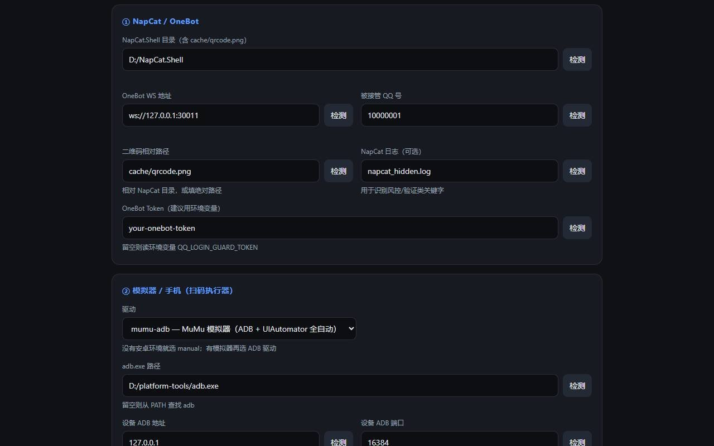

<!doctype html>
<html lang="zh-CN">
<head>
<meta charset="utf-8">
<title>qq-login-guard · 介绍视频</title>
<style>
  *{margin:0;padding:0;box-sizing:border-box}
  html,body{width:1920px;height:1080px;overflow:hidden;background:#0b0e14}
  body{font-family:"Microsoft YaHei","PingFang SC",system-ui,sans-serif;color:#e8edf7}
  #root{width:1920px;height:1080px;position:relative;
    background:radial-gradient(1200px 700px at 80% 20%,rgba(91,157,255,.20),transparent 60%),
               radial-gradient(900px 600px at 8% 92%,rgba(139,108,255,.16),transparent 65%),
               linear-gradient(160deg,#0b0e14 0%,#0d1220 55%,#0a0f1c 100%)}
  .grid{position:absolute;inset:0;background-image:linear-gradient(rgba(120,150,255,.05) 1px,transparent 1px),linear-gradient(90deg,rgba(120,150,255,.05) 1px,transparent 1px);background-size:60px 60px;mask-image:radial-gradient(1100px 700px at 60% 40%,#000,transparent 80%)}
  .head{position:absolute;left:96px;right:96px;top:56px;display:flex;align-items:center;justify-content:space-between}
  .tag{font-size:26px;letter-spacing:2px;color:#8fa3c8;border:1px solid rgba(140,170,255,.35);border-radius:999px;padding:10px 22px}
  .brand{font-size:24px;color:#7f92b4;letter-spacing:1px}
  .brand b{color:#cfe0ff}
  .main{position:absolute;left:96px;right:96px;top:196px;bottom:230px;display:flex;flex-direction:column;justify-content:center}
  h1{font-size:104px;line-height:1.1;font-weight:900;letter-spacing:1px;background:linear-gradient(92deg,#fff,#a9c4ff 65%,#7aa2ff);-webkit-background-clip:text;background-clip:text;color:transparent}
  h1 .g{color:#39d98a;-webkit-text-fill-color:#39d98a}
  h2{font-size:74px;line-height:1.16;font-weight:800;letter-spacing:.5px}
  h2 small{display:block;font-size:30px;color:#9fb0cd;font-weight:400;margin-top:18px;letter-spacing:0}
  .sub{font-size:34px;color:#b9c6dd;line-height:1.5;margin-top:32px}
  .chips{display:flex;gap:16px;flex-wrap:wrap;margin-top:44px}
  .chip{border:1px solid rgba(140,170,255,.45);color:#cfe0ff;border-radius:999px;padding:14px 26px;font-size:26px}
  .chip.g{border-color:rgba(57,217,138,.5);color:#8ff0bd}
  .cols{display:grid;grid-template-columns:1fr 1fr;gap:34px}
  .cols3{display:grid;grid-template-columns:1fr 1fr 1fr;gap:30px}
  .card{background:rgba(18,24,40,.82);border:1px solid #253149;border-radius:20px;padding:34px 36px;box-shadow:0 10px 40px rgba(0,0,0,.35)}
  .card .k{font-size:26px;color:#8fa3c8;letter-spacing:1px}
  .card .v{font-size:42px;font-weight:800;margin-top:14px;line-height:1.35}
  .card .d{font-size:27px;color:#9fb0cd;margin-top:14px;line-height:1.55}
  .card.ok{border-color:rgba(57,217,138,.55)}
  .card.bad{border-color:rgba(255,92,92,.5)}
  .card.warn{border-color:rgba(255,176,32,.5)}
  .big{font-size:150px;font-weight:900;line-height:1;letter-spacing:-2px}
  .big .unit{font-size:54px;font-weight:700;margin-left:10px;color:#9fb0cd}
  .flow{display:flex;align-items:stretch;gap:16px}
  .step{flex:1;background:rgba(18,24,40,.85);border:1px solid #253149;border-radius:18px;padding:28px 22px;text-align:center}
  .step .n{font-size:22px;color:#5b9dff;letter-spacing:2px}
  .step .t{font-size:32px;font-weight:800;margin-top:12px;line-height:1.4}
  .step .s{font-size:23px;color:#93a4c3;margin-top:10px;line-height:1.45}
  .arrow{align-self:center;color:#4b6a9e;font-size:44px}
  .grid6{display:grid;grid-template-columns:1fr 1fr 1fr;grid-template-rows:1fr 1fr;gap:24px}
  .g6{background:rgba(18,24,40,.82);border:1px solid #253149;border-radius:18px;padding:26px 28px}
  .g6 .t{font-size:34px;font-weight:800;display:flex;align-items:center;gap:12px}
  .g6 .d{font-size:24px;color:#9fb0cd;margin-top:10px;line-height:1.5}
  .ico{width:44px;height:44px;border-radius:12px;background:linear-gradient(135deg,#5b9dff,#8b6cff);display:inline-flex;align-items:center;justify-content:center;font-size:22px;color:#06101f;font-weight:900}
  .steps3{display:flex;gap:26px}
  .s3{flex:1;background:rgba(18,24,40,.82);border:1px solid #253149;border-radius:18px;padding:30px}
  .s3 .n{width:56px;height:56px;border-radius:50%;background:rgba(91,157,255,.16);border:1px solid rgba(91,157,255,.5);color:#9cc2ff;font-size:28px;font-weight:800;display:flex;align-items:center;justify-content:center}
  .s3 .t{font-size:34px;font-weight:800;margin-top:20px}
  .s3 .d{font-size:24px;color:#9fb0cd;margin-top:12px;line-height:1.5}
  pre{background:#0a0f1a;border:1px solid #22304a;border-radius:16px;padding:26px 30px;font-family:Consolas,"Cascadia Mono",monospace;font-size:26px;line-height:1.65;color:#c9d6ee;overflow:hidden}
  pre .ok{color:#39d98a}
  pre .dim{color:#6f83a6}
  .shot{width:100%;border-radius:16px;border:1px solid #253149;display:block}
  .cap{font-size:22px;color:#7f92b4;margin-top:12px;text-align:right}
  .subband{position:absolute;left:0;right:0;bottom:0;min-height:190px;background:rgba(6,10,18,.92);border-top:1px solid #22304a;padding:30px 96px 26px}
  .subband .st{font-size:36px;line-height:1.6;color:#eef3fb;letter-spacing:.3px}
  .foot{position:absolute;left:96px;right:96px;bottom:206px;display:flex;justify-content:space-between;font-size:22px;color:#6f83a6}
  .disc{font-size:26px;line-height:1.62;color:#dbe4f3}
  .disc li{list-style:none;padding-left:34px;position:relative;margin-bottom:9px}
  .disc li:before{content:"•";position:absolute;left:6px;color:#ffb020}
  .disc .hl{color:#ffd479}
  .disc .last{color:#ff9b9b;margin-top:12px}
  .note{font-size:22px;color:#7f92b4;margin-top:14px}
  .qrdeco{position:absolute;right:110px;top:250px;width:300px;height:300px;border-radius:24px;background:rgba(10,16,30,.7);border:1px solid rgba(120,160,255,.35);box-shadow:0 0 80px rgba(80,120,255,.3);display:grid;grid-template-columns:1fr 1fr;gap:22px;padding:30px}
  .qrdeco div{border-radius:8px;background-image:linear-gradient(90deg,#cfe0ff 25%,transparent 25% 50%,#cfe0ff 50% 75%,transparent 75%),linear-gradient(#cfe0ff 25%,transparent 25% 50%,#cfe0ff 50% 75%,transparent 75%);background-size:24px 24px;opacity:.85}
  .qrdeco div:nth-child(2){opacity:.45}.qrdeco div:nth-child(3){opacity:.55}.qrdeco div:nth-child(4){opacity:.3}
</style>
</head>
<body>
<div id="root"></div>
<script>
const SUBS = [
  "qq-login-guard：给 NapCat 真人 QQ 号做「掉线自愈」的开源旁路守护。",
  "号被风控踢下线，机器人突然就不回消息了。风控期可能一两个小时掉一次，半夜根本没法管。",
  "AI 框架只负责收发消息；号被踢掉之后，登录态不在框架手里，它本身也做不了什么。",
  "旁路登录自愈守护：NapCat 掉线后，让安卓模拟器里的手机 QQ 替你扫码，把号登回来。",
  "只处理「用协议端登录真人 QQ 号」；腾讯官方 QQ 机器人没有真人登录态，不在范围内。",
  "掉线 → 出新码 → 推码进模拟器相册 → 手机 QQ 扫一扫/相册/确定/授权 → 验证真的在线。",
  "扫码必须由另一台已登录该号的设备完成；做成旁路进程，NapCat 重启、AI 框架挂掉都不受影响。",
  "多路探测、状态机与熔断、ADB 自动扫码、验证上线、配置页、开机自启与通知，全部动作写审计。",
  "Windows + Node 22+ + 已登录的 NapCat + 模拟器（里面的手机 QQ 必须登录同一个号）。",
  "找不到模拟器里 QQ 的位置：长按 QQ → 创建桌面快捷方式，把那个 .lnk 路径填进「冷启动快捷方式」。",
  "双击 0-打开配置页，填 NapCat 目录 / WS / 账号 / token；adb 留空自动找 MuMu；检测全绿后保存。",
  "先 doctor 做环境自检，再 rehearse 做扫码链路空跑——只检查，不点击任何按钮。",
  "人为掉线约 46 秒恢复；自然风控掉线约 5 分钟、中间失败重试一次——不保证一次成功。",
  "仅 NapCat / MuMu+QQ 9.2.20 实测 / Linux 只能检测通知 / 账号级处置需人工 / 不承诺防封。",
  "开源于 GitHub，MIT 协议；Release 里有下载和说明；其它协议端欢迎 PR 适配。",
  "仅限本人账号与设备；禁止代扫、批量骚扰/营销；不保证降低风控与自愈成功率，后果自担。"
];
const TAGS = ["开场","① 问题","① 问题","② 定位","② 边界","③ 原理","③ 原理","④ 功能","⑤ 准备","⑤ 准备","⑥ 安装","⑥ 自检","⑦ 实测","⑧ 边界","⑨ 获取","⚠️ 免责声明"];

const head = (tag) => `<div class="grid"></div><div class="head"><div class="tag">${tag}</div><div class="brand"><b>qq-login-guard</b> · 开源 · MIT</div></div>`;
const subband = (i) => `<div class="foot"><span>NapCat 真人 QQ 号 · 登录态自愈</span><span>github.com/banana770/qq-login-guard</span></div><div class="subband"><div class="st">${SUBS[i]}</div></div>`;

const SLIDES = [
// 0 cover
() => `${head(TAGS[0])}
<div class="main">
  <h1>qq-login-guard</h1>
  <div class="sub">NapCat 真人 QQ 号 · 掉线自动重登<br><span style="color:#8fa3c8;font-size:28px">检测掉线 → 出码 → 模拟器手机 QQ 扫码 → 验证在线</span></div>
  <div class="chips"><span class="chip">旁路守护</span><span class="chip">不依赖 AI 框架</span><span class="chip g">目前仅适配 NapCat</span><span class="chip">开源 MIT</span></div>
</div>
<div class="qrdeco"><div></div><div></div><div></div><div></div></div>
${subband(0)}`,
// 1 pain
() => `${head(TAGS[1])}
<div class="main">
  <h2>机器人突然不回了<small>不是你的 AI 框架不行，是号被风控踢下线了</small></h2>
  <div class="cols3" style="margin-top:56px">
    <div class="card bad"><div class="k">现象</div><div class="v">登录已失效</div><div class="d">NapCat 掉线，OneBot 断开，消息收不到也发不出</div></div>
    <div class="card warn"><div class="k">频率</div><div class="v">可能 1–2 小时一次</div><div class="d">风控期频繁掉线，人工扫码不可持续</div></div>
    <div class="card warn"><div class="k">时间</div><div class="v">半夜没人管</div><div class="d">掉线就是长时间离线，账号看起来像“死号”</div></div>
  </div>
</div>
${subband(1)}`,
// 2 framework vs login
() => `${head(TAGS[2])}
<div class="main">
  <h2>换框架解决不了登录态</h2>
  <div class="cols" style="margin-top:48px">
    <div class="card ok"><div class="k">AI 框架负责</div><div class="v">收消息 · 调模型 · 回消息</div><div class="d">AstrBot / NoneBot / 自研桥 / AI IDE —— 它们只消费“已经在线”的账号</div></div>
    <div class="card bad"><div class="k">登录态负责</div><div class="v">NapCat 登着真人号</div><div class="d">被风控踢下线后，框架收不到任何事件，能做的只有等</div></div>
  </div>
</div>
${subband(2)}`,
// 3 positioning
() => `${head(TAGS[3])}
<div class="main">
  <h2>一个旁路的登录自愈守护</h2>
  <div class="sub">不接消息、不换框架，只负责把登录态救回来。</div>
  <div class="steps3" style="margin-top:54px">
    <div class="s3"><div class="n">1</div><div class="t">检测</div><div class="d">多路探测：OneBot 状态、假死探针、端口/进程、二维码与日志</div></div>
    <div class="s3"><div class="n">2</div><div class="t">出战</div><div class="d">让 NapCat 出新二维码，推进模拟器相册</div></div>
    <div class="s3"><div class="n">3</div><div class="t">扫码</div><div class="d">UI 自动化打开手机 QQ：扫一扫 → 相册 → 确定 → 授权 → 验证在线</div></div>
  </div>
</div>
${subband(3)}`,
// 4 A/B boundary
() => `${head(TAGS[4])}
<div class="main">
  <h2>它只解决 B 类问题</h2>
  <div class="cols" style="margin-top:46px">
    <div class="card ok"><div class="k">✅ 适用：B 类</div><div class="v">协议端登录真人 QQ 号</div><div class="d">NapCat（OneBot 11）等协议端；存在真人登录态，会被风控踢下线</div></div>
    <div class="card bad"><div class="k">❌ 不适用：A 类</div><div class="v">腾讯官方 QQ 机器人</div><div class="d">QQ 开放平台的 AppID/AppSecret，没有真人登录态，不存在“被踢下线”</div></div>
  </div>
  <div class="note">（两类问题不要混：官方机器人不在本工具范围）</div>
</div>
${subband(4)}`,
// 5 principle flow
() => `${head(TAGS[5])}
<div class="main">
  <h2>它是怎么把号登回来的</h2>
  <div class="flow" style="margin-top:56px">
    <div class="step"><div class="n">01</div><div class="t">掉线</div><div class="s">NapCat 登录态失效</div></div><div class="arrow">→</div>
    <div class="step"><div class="n">02</div><div class="t">出新码</div><div class="s">生成新的登录二维码</div></div><div class="arrow">→</div>
    <div class="step"><div class="n">03</div><div class="t">推码</div><div class="s">推进模拟器相册</div></div><div class="arrow">→</div>
    <div class="step"><div class="n">04</div><div class="t">扫码授权</div><div class="s">手机 QQ 扫一扫 · 确定 · 登录</div></div><div class="arrow">→</div>
    <div class="step"><div class="n">05</div><div class="t">验证在线</div><div class="s">真上线才算成功</div></div>
  </div>
  <div class="note">全过程在本机完成；扫码后二维码立即销毁（阅后即焚）。</div>
</div>
${subband(5)}`,
// 6 why
() => `${head(TAGS[6])}
<div class="main">
  <h2>两个设计选择</h2>
  <div class="cols" style="margin-top:48px">
    <div class="card"><div class="k">为什么必须另一台设备扫</div><div class="v">扫码 = 授权登录</div><div class="d">只能由“另一台已经登录该账号”的设备完成；所以用模拟器里的手机 QQ，同机同出口 IP。</div></div>
    <div class="card"><div class="k">为什么做成旁路进程</div><div class="v">NapCat 会重启</div><div class="d">协议端重启、AI 框架挂掉都不影响守护；它只依赖 OneBot + 本地文件 + ADB。</div></div>
  </div>
</div>
${subband(6)}`,
// 7 features
() => `${head(TAGS[7])}
<div class="main">
  <h2>主要功能</h2>
  <div class="grid6" style="margin-top:40px">
    <div class="g6"><div class="t"><span class="ico">探</span>多路探测</div><div class="d">get_status + 假死探针 + 端口/进程/二维码/日志</div></div>
    <div class="g6"><div class="t"><span class="ico">判</span>状态机 · 熔断</div><div class="d">风控/验证自动停手；冷却、每小时与每日上限</div></div>
    <div class="g6"><div class="t"><span class="ico">扫</span>ADB 自动扫码</div><div class="d">推码入相册 → 打开手机 QQ → 授权</div></div>
    <div class="g6"><div class="t"><span class="ico">验</span>验证上线</div><div class="d">轮询确认真的在线；失败通知并重试</div></div>
    <div class="g6"><div class="t"><span class="ico">配</span>配置页</div><div class="d">路径输入框 + 一键检测，不用手改 JSON</div></div>
    <div class="g6"><div class="t"><span class="ico">守</span>自启 · 通知 · 审计</div><div class="d">Windows 计划任务、Webhook/ntfy、audit.jsonl</div></div>
  </div>
</div>
${subband(7)}`,
// 8 requirements
() => `${head(TAGS[8])}
<div class="main">
  <h2>你需要准备四样东西</h2>
  <div class="grid6" style="grid-template-columns:1fr 1fr;grid-template-rows:1fr 1fr;margin-top:44px">
    <div class="g6"><div class="t"><span class="ico">1</span>Windows 10/11</div><div class="d">需要桌面环境与安卓模拟器</div></div>
    <div class="g6"><div class="t"><span class="ico">2</span>Node.js ≥ 22</div><div class="d">零 npm 依赖，装完即用</div></div>
    <div class="g6"><div class="t"><span class="ico">3</span>NapCat 已登录</div><div class="d">开启 OneBot 11 WebSocket（默认 30011）</div></div>
    <div class="g6"><div class="t"><span class="ico">4</span>模拟器 + 同号手机 QQ</div><div class="d">推荐 MuMu 12；手机 QQ 必须登录同一个号（扫码端）</div></div>
  </div>
</div>
${subband(8)}`,
// 9 shortcut howto
() => `${head(TAGS[9])}
<div class="main">
  <h2>找不到模拟器里 QQ 的位置？</h2>
  <div class="steps3" style="margin-top:52px">
    <div class="s3"><div class="n">1</div><div class="t">长按 QQ</div><div class="d">在模拟器桌面长按 QQ 图标</div></div>
    <div class="s3"><div class="n">2</div><div class="t">创建快捷方式</div><div class="d">选择「创建桌面快捷方式 / 发送到桌面」</div></div>
    <div class="s3"><div class="n">3</div><div class="t">填 .lnk 路径</div><div class="d">把电脑上那个快捷方式路径填进「冷启动快捷方式」</div></div>
  </div>
  <div class="note">它不是 apk/安装包路径；模拟器一直开着的话，这一项可以留空。</div>
</div>
${subband(9)}`,
// 10 config
() => `${head(TAGS[10])}
<div class="main">
  <h2 style="font-size:58px">安装：填路径 → 检测 → 保存</h2>
  <div class="cols" style="margin-top:34px;align-items:start">
    <div class="card" style="padding:30px 34px">
      <div class="d" style="font-size:26px;line-height:2.0">
        ① NapCat.Shell 目录 &nbsp;② OneBot WS 地址<br>
        ③ 被接管 QQ 号 &nbsp;④ token（建议环境变量）<br>
        ⑤ adb.exe（留空自动找 MuMu）&nbsp;⑥ 设备端口 16384<br>
        ⑦ 手机 QQ 包名 / 启动 Activity<br>
        ⑧ 冷启动快捷方式 &nbsp;⑨ 策略（先 dry-run）
      </div>
      <div class="note">双击 0-打开配置页.bat → 浏览器打开本地配置页</div>
    </div>
    <div><div class="cap" style="margin-top:10px">配置页（示例数据）</div></div>
  </div>
</div>
${subband(10)}`,
// 11 self check
() => `${head(TAGS[11])}
<div class="main">
  <h2 style="font-size:58px">用之前先自检：doctor → rehearse</h2>
  <div class="cols" style="margin-top:30px;align-items:start">
    <pre><span class="dim">$</span> node src\\cli.mjs doctor\n<span class="ok">✓</span> Node 版本\n<span class="ok">✓</span> NapCat 目录 / 二维码目录\n<span class="ok">✓</span> OneBot 端口与鉴权\n<span class="ok">✓</span> adb 解析 / 设备连接</pre>
    <pre><span class="dim">$</span> node src\\cli.mjs rehearse\n<span class="ok">✓</span> adb 可执行 1.0.41\n<span class="ok">✓</span> 设备在线 127.0.0.1:16384\n<span class="ok">✓</span> 分辨率 1080x1920\n<span class="ok">✓</span> 手机 QQ 9.2.20 / uiautomator 可用</pre>
  </div>
  <div class="note">rehearse 只检查、不点击、不扫码；输出字段取自真实自检结果。</div>
</div>
${subband(11)}`,
// 12 measured
() => `${head(TAGS[12])}
<div class="main">
  <h2>实测数据（2026-11-03）</h2>
  <div class="cols" style="margin-top:48px">
    <div class="card ok"><div class="k">人为制造掉线</div><div style="display:flex;align-items:baseline;margin-top:10px"><span class="big">46</span><span class="unit">秒</span></div><div class="d">检测 → 出码 → 扫码 → 验证上线，全程无人工</div></div>
    <div class="card warn"><div class="k">腾讯自然风控掉线</div><div style="display:flex;align-items:baseline;margin-top:10px"><span class="big">≈5</span><span class="unit">分钟</span></div><div class="d">中间失败重试一次后恢复——不保证一次成功</div></div>
  </div>
  <div class="note">数字来自仓库 README 的实测记录；失败会通知，靠冷却 + 重试覆盖。</div>
</div>
${subband(12)}`,
// 13 scope & limits
() => `${head(TAGS[13])}
<div class="main">
  <h2 style="font-size:58px">适用场景与限制（实话实说）</h2>
  <div class="cols3" style="margin-top:34px;align-items:start">
    <div class="card ok"><div class="k">✅ 适用</div><div class="d" style="font-size:26px;line-height:1.9">Windows 本机<br>本地安卓模拟器<br>本人账号 / 本人设备</div></div>
    <div class="card warn"><div class="k">⚠️ 限制</div><div class="d" style="font-size:25px;line-height:1.75">目前仅适配 NapCat<br>MuMu 12 + QQ 9.2.20 实测<br>Linux 无安卓 → 只能检测+通知<br>账号级处置需人工<br>不承诺防封/一次成功</div></div>
    <div class="card bad"><div class="k">❌ 不适用</div><div class="d" style="font-size:26px;line-height:1.9">腾讯官方机器人（A 类）<br>代扫/远程扫码<br>批量加好友/群发矩阵</div></div>
  </div>
</div>
${subband(13)}`,
// 14 get it
() => `${head(TAGS[14])}
<div class="main">
  <h2>开源获取</h2>
  <div class="card" style="margin-top:44px;padding:40px 44px">
    <div style="font-size:58px;font-weight:900;letter-spacing:.5px">github.com/banana770/qq-login-guard</div>
    <div class="d" style="font-size:28px;margin-top:18px">Release v0.1.0 · MIT License · Issue / PR 欢迎（其它协议端适配见 docs/PROTOCOL_COMPAT.md）</div>
  </div>
  <div class="chips" style="margin-top:36px"><span class="chip g">star 支持一下</span><span class="chip">仅限本人账号</span><span class="chip">使用前先看免责声明</span></div>
</div>
${subband(14)}`,
// 15 disclaimer (full)
() => `${head(TAGS[15])}
<div class="main" style="justify-content:flex-start;padding-top:10px">
  <h2 style="font-size:52px">免责声明（完整）</h2>
  <ul class="disc" style="margin-top:26px">
    <li>本工具<span class="hl">仅用于恢复你本人自有 QQ 号、在本人自有设备上的登录状态</span>。</li>
    <li>严禁用于他人账号、代登录、代扫码、远程扫码、账号买卖或租借。</li>
    <li>严禁用于批量加好友、批量私聊、群发营销、引流、骚扰、诈骗或任何违法用途。</li>
    <li>不自动处理短信验证码、滑块验证、申诉等人机校验；检测到此类状态会停止并通知。</li>
    <li>使用 NapCat 等第三方协议端登录真人 QQ 号本身存在账号被限制、冻结或封禁的风险；<span class="hl">不保证降低风控、不保证自愈成功率、不承担任何账号或数据后果</span>。</li>
    <li>请勿使用高价值主号测试；使用前请自行阅读并遵守腾讯相关服务条款与当地法律法规。</li>
    <li>本项目为开源软件（MIT），按“现状”提供，不提供任何明示或暗示担保。</li>
    <li class="last">继续使用即表示你已阅读并同意以上内容。（完整文本见 docs/COMPLIANCE.md）</li>
  </ul>
</div>
${subband(15)}`
];

const i = Math.max(0, Math.min(15, parseInt((location.hash || '#0').slice(1), 10) || 0));
document.getElementById('root').innerHTML = SLIDES[i]();
</script>
</body>
</html>
